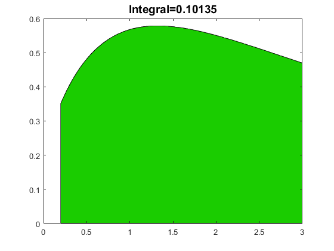
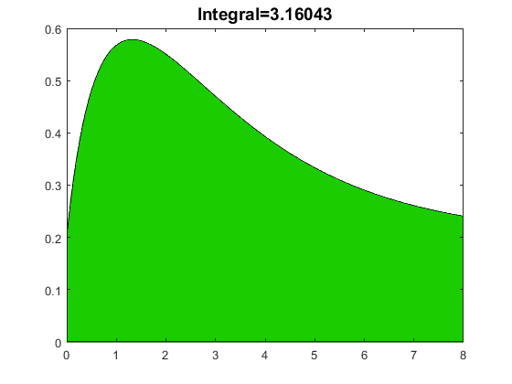

GUIA LABORATORIO NRO. 8
Contents
INTEGRACION NUMERICA
%Alexis Bruce Barrios Echalar %integral(fun,a,b) mediante una función anónima %integral(@fun,a,b) mediante una M-función
Ejercicio 1.- Calcular integrales
fun=@(x) sin(4*log(x)) cod=integral(fun,0.2,3) %Calculo de la integral por funcion q=integral(@mifun4,0.2,3) %Grafica x=linspace(0.2,3); y=mifun(x); area(x,y,'FaceColor', [0.1,0.8,0]) title(['Integral=', num2str(q,'%12.5f')], 'FontSize', 14);
fun =
function_handle with value:
@(x)sin(4*log(x))
cod =
0.1013
q =
0.1013
 Ejercicio 2.- Calcular integral y realizar gráfica
x=linspace(0,8, 1000); mifunf=@(x) x.*exp(-x.^0.8)+0.2; cod=integral(mifunf, 0,8) %valor en definicion %Calculo de la integral por funcion q=integral(@mifun,0,8) y=mifun(x); % mifun es la función creada area(x,y, 'FaceColor', [0.1,0.8,0]) title(['Integral=',num2str(q,'%12.5f')], 'FontSize',14); %antiderivada
cod =
3.1604
q =
3.1604
 Ejercicio 3.-Calcular integral definida
k=3.33 fun=@(x) x.*sin(4.*log(k*x)) coda=integral(fun,0.5,7) k=1.33 codb=integral(fun,0.5,7)%el valor en definicion no cambia k=2.33 codc=integral(fun,0.5,7)%el valor en definicion no cambia
k =
3.3300
fun =
function_handle with value:
@(x)x.*sin(4.*log(k*x))
coda =
-9.6979
k =
1.3300
codb =
-9.6979
k =
2.3300
codc =
-9.6979
Ejercicio 4.- Integracion con trapz
%Integracion definida con trapecios %Dada la función, la regla trapezoidal incrusta los trapezoides en una función %y luego calcula la suma total de todas las áreas de los trapezoides. %El área roja representa el área que la regla trapezoidal no tiene en %cuenta en este caso. %Tenga en cuenta que cuanto mayor sea el número de intervalos, mayor será %el número de trapecios, hay más cálculos sin embargo, los resultados %son más precisos %Este ejemplo muestra cómo utilizar la función trapz que se basa en la %regla trapezoidal. Definir el rango de la integral.Tenga en cuenta que %tenemos un rango de -10 a 10 con un incremento de 2. Esto significa que %tendremos 10 intervalos de 10 trapecios. Evalúe la función integrando %representada por y para este rango. Use trapz para estimar la integral. %Tenga en cuenta que x, (el valor independiente) es la primera entrada e y, %(la función integrando) es la segunda entrada en la funcion. %El valor de la integral se evalúa y almacena en la variable de salida z %suma de los trapezoides %1er ejemplo x=[-10:2:10]; y1=x.^2 z1=trapz(x,y1) %2do ejemplo y2=4*x-x.^2 z2=trapz(x,y2) %3er ejemplo y3=exp(x) z3=trapz(x,y3)
y1 =
100 64 36 16 4 0 4 16 36 64 100
z1 =
680
y2 =
-140 -96 -60 -32 -12 0 4 0 -12 -32 -60
z2 =
-680
y3 =
1.0e+04 *
Columns 1 through 7
0.0000 0.0000 0.0000 0.0000 0.0000 0.0001 0.0007
Columns 8 through 11
0.0055 0.0403 0.2981 2.2026
z3 =
2.8922e+04